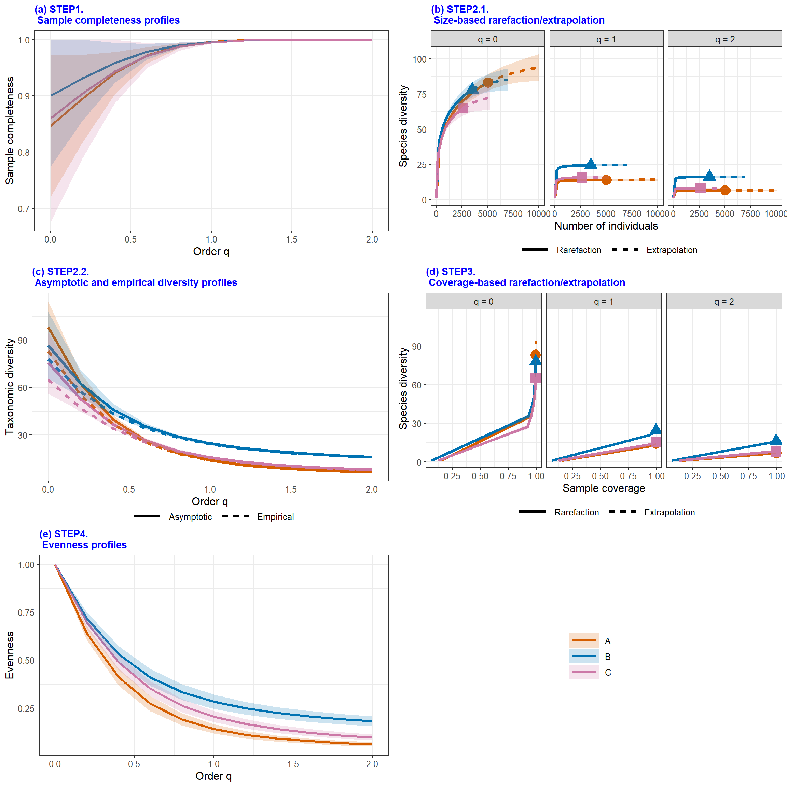
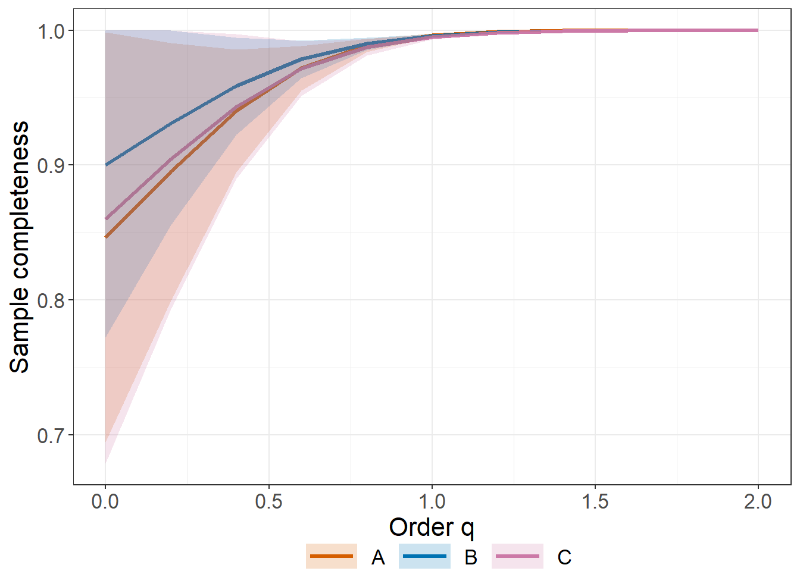
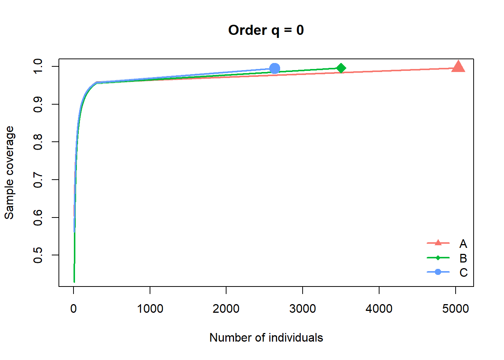

## install the latest version from github
# install.packages('devtools')
library(devtools)
# install_github('AnneChao/iNEXT.3D')
library(iNEXT.3D)
# install_github('AnneChao/iNEXT.4steps')
library(iNEXT.4steps)
library(ggplot2)Taller 7. Visualización de Comunidades
Diversidad Alfa de un ensamble de macroinvertebrados acuuáticos
El presente taller, tiene por objeto, aprender a utilizar la plataforma iNEXT de cuatro pasos iNEXT.4steps, el cual consiste en la valoración de la diversidad en localidades o muestras. Este procedimiento permite calcular los siguientes cuatro insumos: (1) la completitud o integridad de la muestra, (2) la diversidad asintótica, (3) la diversidad no asintótica y (4) la uniformidad de las abundancias (Chao et al. 2020).
Hay una plataforma generada por Chao y colaboradores Enlace de la Plataforma, pero en este caso se trabajará con los comandos de R con el paquete iNEXT.4steps, para calcular los estimadores de diversidad Enlace de los comandos de R.
¿Qué es iNEXT? Herramienta que infiere sobre la diversidad esperada de uno o más lugares, a partir de datos observados (tabulados de campo), por medio de interpolación (iN) y de extrapolación (EXT) de los datos de cada muestra tomada en campo. Los detalles se muestran en el artículo de Chao et al. 2020 (enlace), especialmente la tabla 2 y la plataforma de iNEXT en 4 pasos (enlace), que aplica a lo mencionado en el artículo.
A continuación se describen los cuatro pasos para valorar la diversidad de una o varias muestras tomadas de comunidades:
• Paso 1: Perfil de completitud. Muestra que tan completa es la muestra evaluada dependiendo de que la pendiente de la curva (eje y) se aproxime a cero para los tres órdenes de diversidad (eje x). Normalmente esa pendiente se estabiliza en los órdenes q= 1 (especies frecuentes o dominantes registradas) y q= 2 (especies muy frecuentes). No sucede lo mismo con el orden q= 0 (número de especies) donde la pendiente es mayor lo cual indica que el esfuerzo debe aumentar.
• Paso 2: Rarefacción y extrapolación y perfil asintótico de diversidad. El primero hace relación a la proyección de los órdenes q= 0, q= 1 y q= 2 (línea punteada), hasta el doble de los individuos observados (eje x). Normalmente en q=0 la curva punteada no alcanza a estabilizarse (pendiente =0), lo cual impide una estimación precisa de la diversidad verdadera. En caso de que lo anterior se estime con precisión, el perfil asintótico permitirá reportar la diversidad no detectada (perfil estimado - empírico u observado), de lo contrario se debe analizar el siguiente paso.
• Paso 3. Perfil no asintótico. Se aplica estandarizando coberturas, para muestras en las que no se puede estimar la diversidad con precisión. Se extrae una fracción de la muestra de forma aleatoria. Entonces se analiza el nivel de diversidad (eje y), para una cobertura máxima que tienda a 1 (eje x).
• Paso 4. Perfil de uniformidad. Permite evaluar la uniformidad en las abundancias de las especies registradas por las muestras comparadas para una cobertura máxima. Allí se sugiere a la plataforma iNEXT en 4 pasos (enlace) para ejecutar todo el análisis.
Ejercicio 1. Base de datos de macroinvertebrados acuáticos, tomados del río Gaira (2020)
 Escarabajo buceador (Acilius sulcatus)
Escarabajo buceador (Acilius sulcatus)
Objetivo Realizar los cuatro pasos para la valoración de la diversidad de taxones presentes en los tres sitios en comparación (A: Tramo alto, B: Tramo Medio, C: Tramo Bajo del río). Para más detalles de esta base de datos, se puede consultar a Rodríguez-Barrios et. al (2011)
Cargar librerías
Para poder ejecutar estas librerías, es recomendable utilizar la plataforma posit.cloud, debido a que el programa R instalado en el computador, puede presentar errores de instalación de estos complementos. Se requiere crear una cuenta en la página en mención.
Cargar la base de datos (datos)
Esta base de datos será entregada por el docente, en el material correspondiente a la actividad de cómputo. El presente video muestra de una manera resumida, la forma de iniciar el trabajo en esta plataforma posit.cloud (anteriormente rstudio.clod) ver video. Realizar los pasos para cargar la base de datos, que para este caso es: datos.csv (entregada por el docente).
# Cargar la base de datos y asignarla como "datos"
datos <- read.csv2("datos.csv", row.names=1)
head(datos) # head permite mostrar solo 6 filas de la base de datos (datos). A B C
Simulium 1586 323 99
Chironominae 901 451 756
Orthocladinae 473 54 79
Baetodes 346 248 42
Diamesinae 170 37 10
Atopsyche 159 18 1La base de datos, también se puede cargar desde el icono “Import Dataset” ubicado a la derecha del panel de posit.cloud y seleccionar “From text (base)”
Con el siguiente resumen estadístico se definen las abundancias para cada sitio evaluado (Max.)
# Comparación de estadísticos de las muestras evaluadas (A, B y C)
summary(datos) A B C
Min. : 0.00 Min. : 0.00 Min. : 0.0
1st Qu.: 1.00 1st Qu.: 0.00 1st Qu.: 0.0
Median : 2.00 Median : 2.00 Median : 1.0
Mean : 47.05 Mean : 32.72 Mean : 24.6
3rd Qu.: 18.50 3rd Qu.: 18.50 3rd Qu.: 10.0
Max. :1586.00 Max. :451.00 Max. :756.0 Cuatro pasos para valorar la diversidad de los sitios en comparación
Resumen tabular de los cuatro pasos
A continuación se calcula la diversidad alfa en 4 pasos, de acuerdo a la propuesta de Chao et al. (2020). Este procedimiento puede tardar algunos minutos y dependerá de la velocidad de conexión a internet y al tamaño de la base de datos evaluada. diversity = "TD" corresponde a la diversidad taxonómica calculada. El comando names(result1), muestra a los diferentes insumos del análisis.
- Resultados resumidos. El comando
result1$summary, permite mostrar a todos los insumos tabulares de los 4 pasos del análisis de divversidad.
# Insumos tabulares de la diversidad en 4 pasos
result1 <- iNEXT4steps(data = datos, diversity = "TD", datatype = "abundance")
result1$summary$`STEP1. Sample completeness profiles`
Assemblage q = 0 q = 1 q = 2
1 A 0.85 1 1
2 B 0.90 1 1
3 C 0.86 1 1
$`STEP2. Asymptotic analysis`
Assemblage Diversity Observed Estimator s.e. LCL UCL
1 A Species richness 83.00 98.04 14.03 83.00 125.53
2 A Shannon diversity 13.91 14.05 0.29 13.48 14.63
3 A Simpson diversity 6.66 6.66 0.16 6.36 6.97
4 B Species richness 78.00 86.65 9.15 78.00 104.58
5 B Shannon diversity 24.31 24.64 0.49 23.67 25.60
6 B Simpson diversity 16.03 16.10 0.39 15.33 16.87
7 C Species richness 65.00 75.56 10.20 65.00 95.56
8 C Shannon diversity 15.56 15.80 0.42 14.99 16.62
9 C Simpson diversity 7.97 7.99 0.24 7.52 8.46
$`STEP3. Non-asymptotic coverage-based rarefaction and extrapolation analysis`
Cmax = 0.999 q = 0 q = 1 q = 2
1 A 92.29 13.98 6.66
2 B 83.74 24.47 16.06
3 C 72.48 15.71 7.98
$`STEP4. Evenness among species abundances`
Pielou J' q = 1 q = 2
A 0.58 0.14 0.06
B 0.72 0.28 0.18
C 0.64 0.21 0.10Los cuatro pasos de este análisis se detallan a continuación.
- Paso 1. $
STEP1. Sample completeness profilesPerfil de completitud. Muestra que tan completa es cada muestra evaluada para los órdenesq= 0(riqueza),q= 1(especies frecuentes o abundantes),q= 2(especies muy frecuentes o dominantes). Normalmenteq=0es de menor completitud (muestra insuficiente) debido a losf1(cantidad de singletons), entre otros factores.
# Paso 1. Perfil de completitud
result1$summary$"STEP1. Sample completeness profiles" Assemblage q = 0 q = 1 q = 2
1 A 0.85 1 1
2 B 0.90 1 1
3 C 0.86 1 1Para este caso, solo q = 0 presenta una proporción < 1, los cual puede indicar que si se aumenta el esfuerzo de muestreo o el tamaño de la muestra, pueden encontrarse nuevos taxones.
- Paso 2. $
STEP2. Asymptotic analysisPerfil asintótico. Diversidad proyectada (estimada) asumiendo que las muestras tienen tamaño suficiente (coberturas superiores a 0.9),q= 0(riqueza),q= 1(especies frecuentes o diversidad de Shannon),q= 2(especies muy frecuentes o diversidad de Simpson).
# Paso 2. Perfil Asintótico
result1$summary$"STEP2. Asymptotic analysis" Assemblage Diversity Observed Estimator s.e. LCL UCL
1 A Species richness 83.00 98.04 14.03 83.00 125.53
2 A Shannon diversity 13.91 14.05 0.29 13.48 14.63
3 A Simpson diversity 6.66 6.66 0.16 6.36 6.97
4 B Species richness 78.00 86.65 9.15 78.00 104.58
5 B Shannon diversity 24.31 24.64 0.49 23.67 25.60
6 B Simpson diversity 16.03 16.10 0.39 15.33 16.87
7 C Species richness 65.00 75.56 10.20 65.00 95.56
8 C Shannon diversity 15.56 15.80 0.42 14.99 16.62
9 C Simpson diversity 7.97 7.99 0.24 7.52 8.46La diferencia entre la diversidad estimada y la observada define al número de especies o taxones faltantes (no detectados). s.e. y LCL, son los errores estándar y los límites de confianza, respectivamente, para las proyecciones gráficas que se definen a continuación.
- Paso 3. $
STEP3. Non-asymptotic coverage-based rarefaction and extrapolation analysisPerfil no asintótico basado en interpolación y extrapolación. Cobertura (eje x) obtenida de una muestra aleatoria, extrapolada para aumentar su representación (Cmax).Este paso es apropiado cuando hay demasiados tazones no detectados o faltantes y la diversidad no se puede calcular con precisión.
# Paso 3. Perfil no asintótico basado en interpolación y extrapolación
result1$summary$"STEP3. Non-asymptotic coverage-based rarefaction and extrapolation analysis" Cmax = 0.999 q = 0 q = 1 q = 2
1 A 92.29 13.98 6.66
2 B 83.74 24.47 16.06
3 C 72.48 15.71 7.98Para este caso, el número de taxones de la muestra aleatoria q = 0, está entre 72 y 92. El número de taxones frecuentes q = 1 se encuentra entre 14 y 25 y el número de taxones muy frecuentes q = 2, está entre 7 y 16.
- Paso 4. $
STEP4. Evenness among species abundancesPerfil de uniformidad. Permite evaluar la uniformidad en las abundancias de los taxones por las muestras comparadas para una cobertura máxima. Sirve para comprar entre el patrón de uniformidad en las abundancias de los taxones para los dos lugares evaluados.
La Uniformidad (Evenness) se calcula mediante el índice de Piellou (J’), donde: J' = H/log(S), donde H denota la diversidad de Shannon y S es el número de taxones de la muestra.
# Paso 4. Perfil de uniformidad
result1$summary$"STEP4. Evenness among species abundances" Pielou J' q = 1 q = 2
A 0.58 0.14 0.06
B 0.72 0.28 0.18
C 0.64 0.21 0.10El anterior insumo indica que la uniformidad J' se mueve entre 58% y 64% (muestras poco uniformes en las abundancias de los taxones).
Insumos gráficos de los cuatro pasos
figure[[6]] relaciona a las seis figuras que resumen el proceso de los cuatro pasos para valorar la diversidad de los tres sitios evaluados.
# Figuras generadas por los cuatro pasos de la valoración de la diversidad.
result1$figure[[6]]
Paso 1. Completitud de las muestras
Completeness, se utiliza para medir la integridad de la muestra, a través del perfil de completitud (primer paso de la valoración). este procedimiento puede demorar algunos minutos.
# Perfil de completitud de las muestras
result1 <- Completeness(data = datos, datatype = "abundance")La siguiente figura puede ser complementada con la figura relacionada en la propuesta de Chao et al. (2020)
# Figura del perfil de completitud
ggCompleteness(result1)
Similar a lo descrito en la tabla del paso 1, se observa en la figura, que la muestra más completa es la del tramo B, seguida de los tramos C y A, respectivamente. Al analizar el eje X (q = 0, 1 y 2) se observa que la menor completitud se presenta en el orden q = 0, lo cual indica que hay taxones no detectados en las muestras evaluadas.
Paso 2. Análisis asintótico
“Diversidad asintótica” es la que se obtiene cuando por más que aumente la abundancia de individuos, no aumenta la diversidad (la curva se vuelve asintótica o con pendiente = 0). Estos perfiles son útiles para comparar la diversidad de muestras de diferentes tamaños y preferiblemente que sean grandes, lo cual no es el caso del presente ejercicio.
2.1 Análisis Asintótico basado en interpolación y extrapolación (iNEXT) Para esta figura, no hay una función en iNEXT 4 steps, que permita realizarla por separado, por ello se utilizará la versión anterior (iNEXT).
# install.packages("iNEXT")
library(iNEXT)Se proyectará hasta 4000 individuos que corresponden a un poco más del doble de la abundancia para el sitio con mayor número de individuos colectados.
# Cálculo del perfil asintótico con los tres estimadores de diversidad
result2 <- iNEXT(datos, q=c(0, 1, 2), datatype="abundance", endpoint=4000)# Figuras del perfil asintótico calculado
ggiNEXT (result2, type=1, facet.var="Order.q") +
theme_bw(base_size = 18) +
labs(x = "Número de individuos", y = "Diversidad")Para este caso, las curvas del primer panel (q = 0) no se estabilizan o no se vuelven asintóticas, debido a que el esfuerzo de muestreo es insuficiente, por lo cual se sugiere reemplazar a este análisis por el siguiente perfil que no es asintótico (pendiente de la curva mayor a cero).
Paso 3. Perfil no asintótico basado en interpolación y extrapolación (iNEXT)
Comparación de las curvas asumiendo tamaños de muestra insuficiente o de muestras pequeñas, mediante la extracción de una submuestra del total evaluado (Cmax), extrapolándola e interpolándola.
# Cálculo del perfil no asintótico con los tres estimadores de diversidad
result3 <- iNEXT(datos, q=c(0, 1, 2), datatype = "abundance", se = TRUE, size = 10:300, endpoint = 4000)# Figura del perfil no asintótico
plot <- plot(result3, type = 2)
Paso 4. Uniformidad de las muestras (tramos evaluados)
Evenness valora el nivel de uniformidad en las abundancias de los taxones de invertebrados acuáticos. La siguiente figura muestra a cinco estimadores de uniformidad, basado en la propuesta de Chao y Ricotta (2019). Ver tabla 1 y figura 2 del artículo.
# Cálculo de los cinco modelos de uniformidad
result1 <- Evenness(data = datos, datatype = "abundance")A continuación se relacionan los cinco modelos de uniformidad (E1 a E5), desarrollados por Chao y Ricotta (2019). Ver tabla 1 y figura 2 del artículo.
# Figura con los cinco modelos de uniformidad
ggEvenness(result1)
En la figura se observa que para los cinco modelos de uniformidad, el tramo A es el que presenta mayor uniformidad, seguido del C y el B, respectivamente. La mayor uniformidad del tramo A se presenta especialmente para los taxones dominantes (q = 1) y muy dominantes (q = 2) (ver los órdenes de diversidad en el eje x). En el modelo E4, los valores de uniformidad son casi iguales para los taxones dominantes y muy dominantes (q = 0, 1 y 2).
Como citar la fuente de estos cálculos
Chao, A., Y. Kubota, D. Zelený, C.-H. Chiu, C.-F. Li, B. Kusumoto, M. Yasuhara, S. Thorn, C.-L. Wei, M. J. Costello, and R. K. Colwell (2020). Quantifying sample completeness and comparing diversities among assemblages. Ecological Research, 35, 292-314.